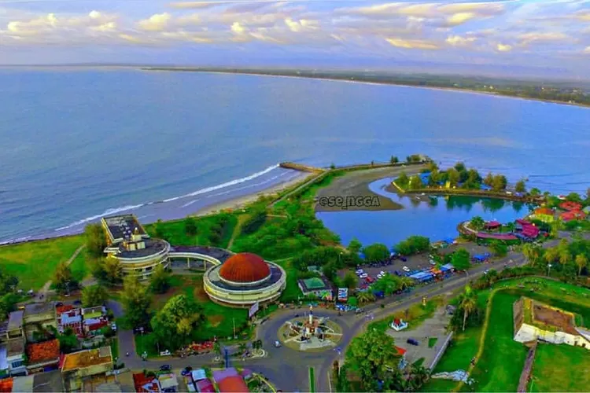

Pantai Tapak Paderi
Pantai Tapak Paderi yang terletak di Kelurahan Kebun Keling, Kecamatan Teluk Segara, Kota Bengkulu, merupakan destinasi wisata bahari yang memadukan keindahan alam dan nilai sejarah karena berdekatan dengan Benteng Marlborough peninggalan kolonial Inggris. Pantai ini memiliki pasir putih lembut, air laut jernih yang langsung menghadap Samudra Hindia, serta ombak yang relatif tenang, menjadikannya cocok untuk berenang, bersantai, atau menikmati panorama matahari terbenam yang memesona. Tersedia fasilitas seperti area parkir, warung makan, gazebo, hingga spot snorkeling dan diving. Keunikan lainnya adalah hadirnya “Pondok Sandal Jodoh,” sebuah spot foto kreatif yang sekaligus menjadi kampanye kebersihan pantai oleh warga setempat. Lokasinya mudah diakses, buka setiap hari dari pagi hingga malam, dan tidak dikenakan tiket masuk—hanya membayar parkir sekitar Rp2.000–Rp5.000 menjadikan Pantai Tapak Paderi salah satu tempat favorit wisatawan lokal dan luar daerah.
Kembali